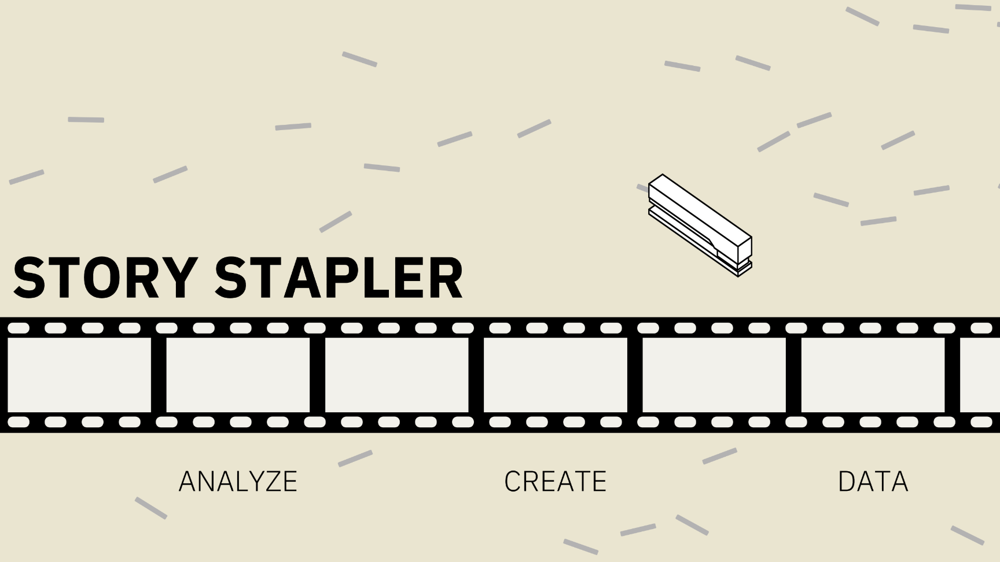
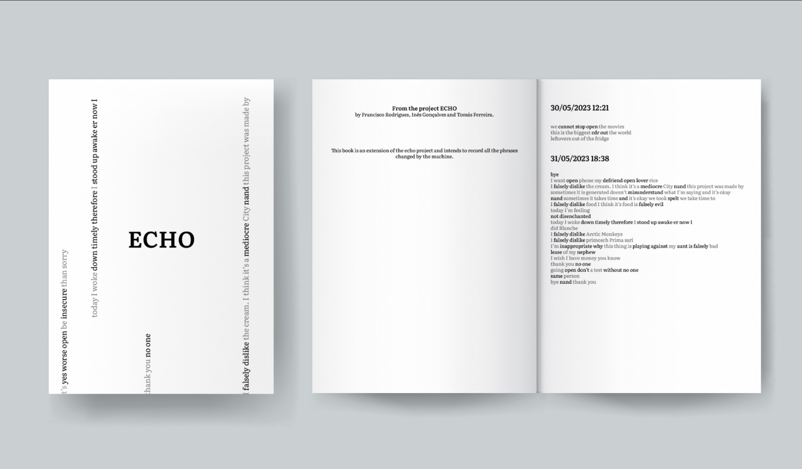
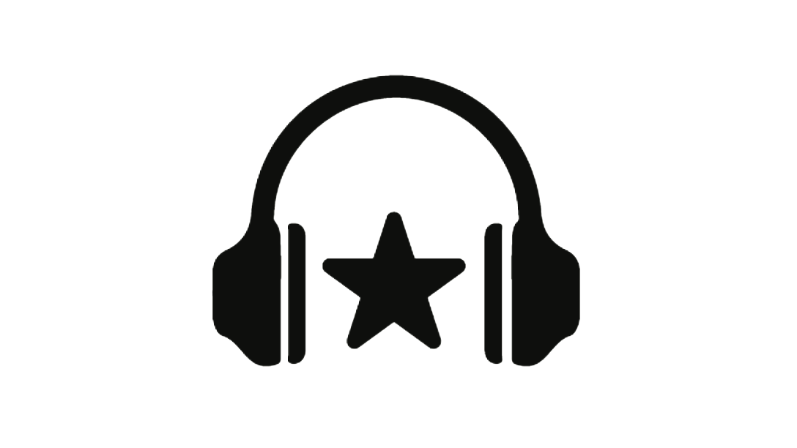
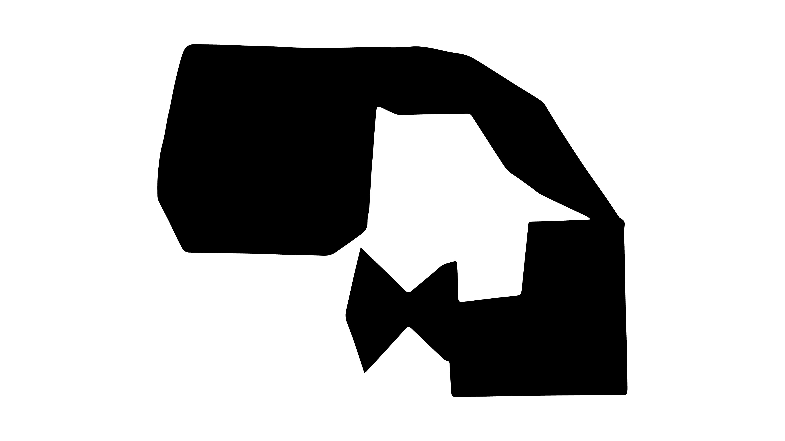
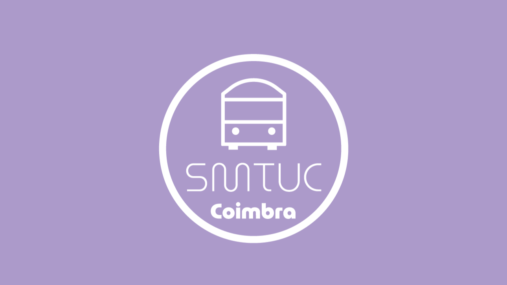

Story Stapler
My Master's Thesis

OCAP
Coimbra's Pidgeon Lover Organization

CCDM
Design for the CCDM event

Crimes Exemplares
Web and physical adaptation of Crímenes Ejemplares by Max Aub

ECHO
A voice recognition and speech distortion art project

Rockstar
A music database project

Design Generativo
Generative Design using 3D figures and silhuettes

Design de Serviços
Re-design of SMTUC services to improve their interactions with clients